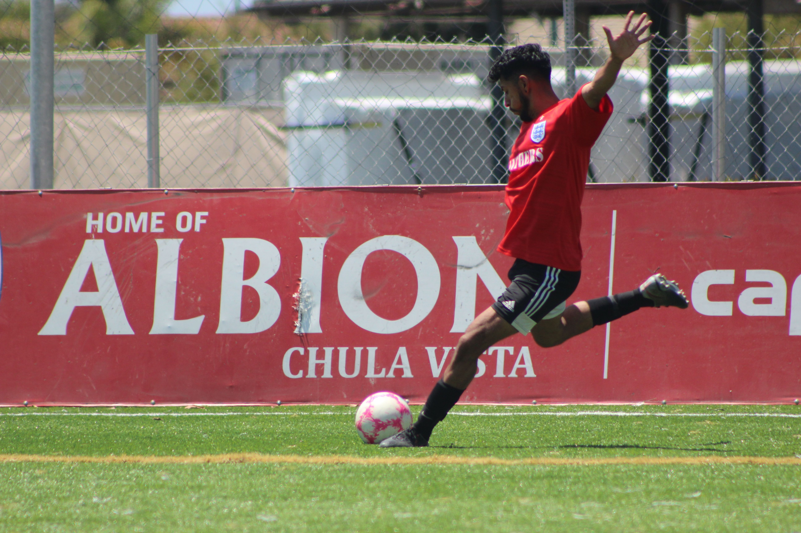

“When I’m not designing user-friendly websites or diving into new programming languages, you can find me on the soccer field or hitting the gym.”
Soccer
“Soccer has been a major part of my life since I first kicked a ball at age 10. When I was starting out, my older and more experienced cousin helped me develop my skills, which wasn’t always easy. I wasn’t the best growing up, but I never gave up, pushing myself even when things got frustrating. That dedication paid off in high school, when I earned a spot on the varsity team and played for three years, growing as both a player and a teammate. Through the challenges, I learned that perseverance, even in tough times, builds leadership and strengthens teamwork—lessons that have stayed with me both on and off the field.”
Working Out
“Soccer kept me lean throughout my youth with its intense training and non-stop running. At 25, I hit the gym to add muscle and boost my strength for soccer. The progress I saw fueled my determination to keep going, and working out quickly became a passion in itself. Through this journey, I also developed better habits like focusing on nutrition and prioritizing sleep to optimize recovery. Ultimately, it taught me that discipline and consistency pay off both in fitness and in life.”